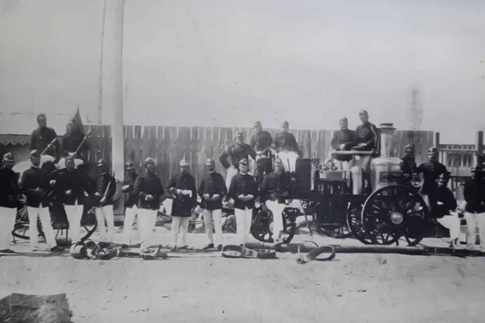

Unidad del material mayor histórico de la Quinta Compañía de Bomberos de Talcahuano.
Año: 1911.
Volver a las unidades históricas
 Gallo1908
Gallo1908
 Hansa Lloyd «Bomba Flanders»1927
Hansa Lloyd «Bomba Flanders»1927